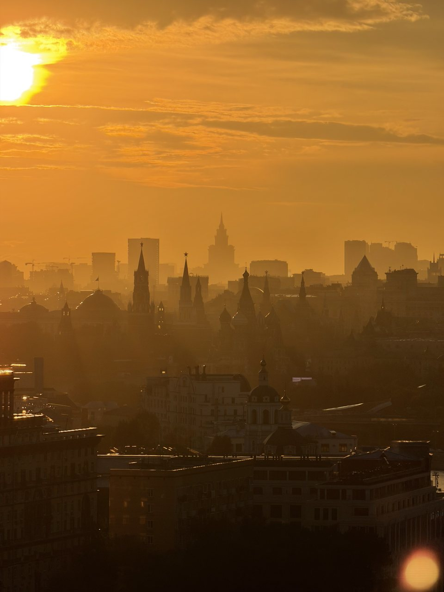
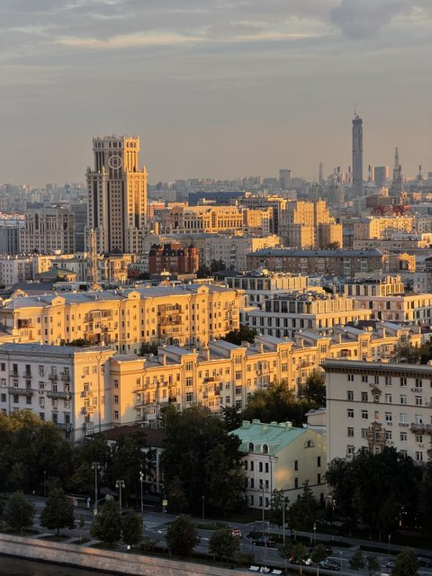
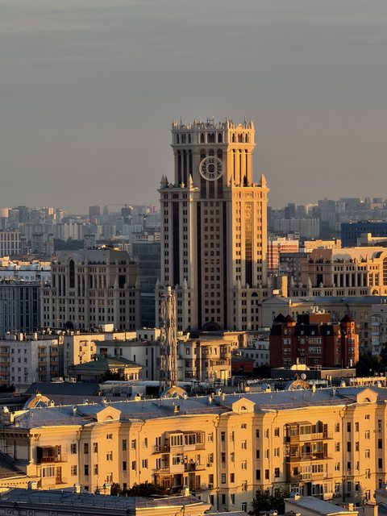
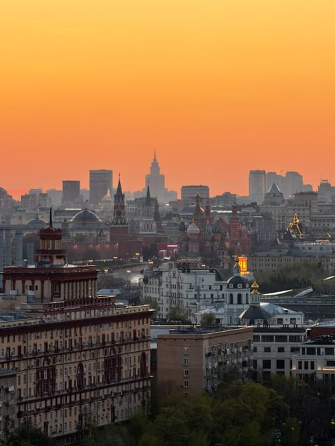
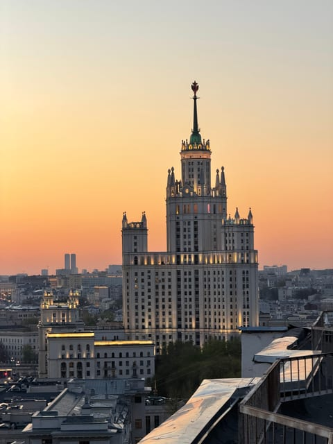
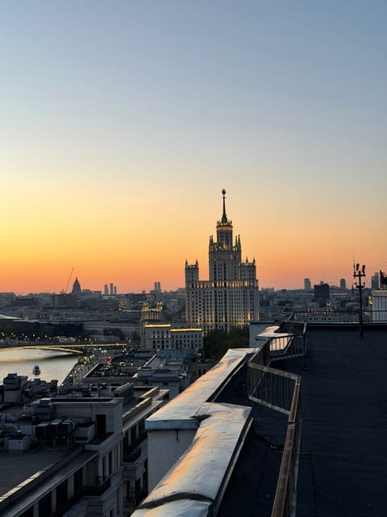
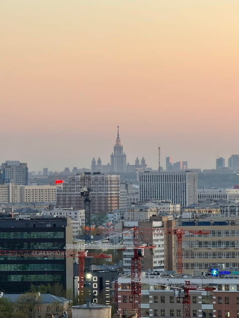
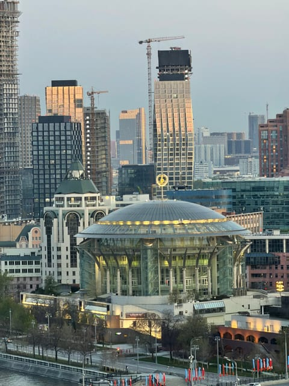
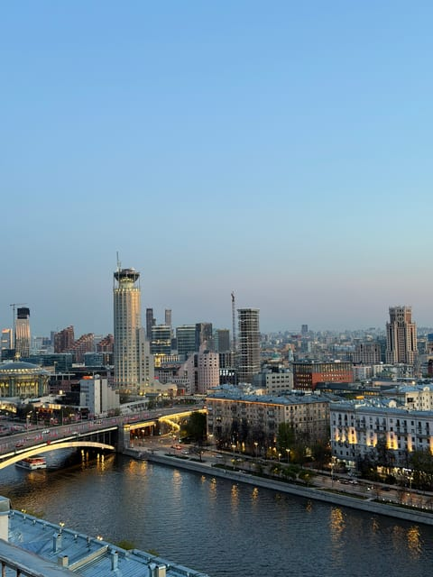
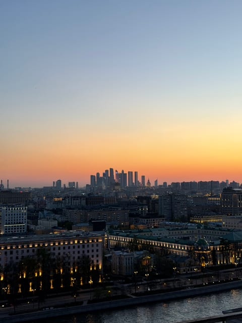

Панорама центра
Крыша на Таганской
Одна из немногих точек, где в один кадр попадают Кремль, сталинская высотка на Котельнической и башни Москва-Сити на горизонте.
Эту крышу мы сейчас не предлагаем — посмотрите другие в каталоге.
Что видно с этой крыши
Главное с этой крыши — центр как на ладони. В ясный вечер отсюда различимы башни Кремля и купола собора Василия Блаженного: они стоят в дымке чуть левее центра панорамы, а на закате превращаются в графичные силуэты на оранжевом небе.
Справа по панораме — высотка на Котельнической набережной, вечером она включает подсветку и становится самым ярким объектом в кадре. Ниже идёт Москва-река с мостами и потоком машин по набережной, а если перевести взгляд дальше, видно стеклянный купол Дома музыки и небоскрёбы делового центра.
На горизонте, в самой дальней точке, собираются башни Москва-Сити — в закатные вечера они превращаются в тёмный зубчатый силуэт на светлой полосе неба.
Когда лучше приходить
Лучшее время — за час до заката и следующие полчаса после него: сначала золотой свет ложится на фасады и купола, потом в городе включается подсветка и высотка на Котельнической начинает светиться. Днём здесь тоже красиво, но панорама выглядит более плоской.
Кому подойдёт
Подойдёт, если хочется классическую открыточную Москву: Кремль, сталинская высотка, река. Хороший вариант для первой прогулки по крышам и для съёмки видовых кадров — фотографий с этой точки у нас больше, чем с любой другой.
Как попасть
Подняться можно только вместе с сопровождающим: мы встречаемся у дома в назначенное время, поднимаемся и коротко объясняем правила на площадке. Точный адрес и точку встречи присылаем после подтверждения записи — заранее их не публикуем. Что взять с собой: удобную нескользящую обувь и тёплый слой, вечером на высоте прохладнее, чем на улице. Подробнее — в гиде «Как попасть на крышу в Москве».
Фотографии
Кадры с этой крыши
Все снимки сделаны нами на этой локации — они показывают, что реально видно с точки.









FAQ
Вопросы про эту крышу
Правда ли, что с этой крыши виден Кремль?
Да, в ясную погоду. На наших фотографиях с этой точки видны башни Кремля и купола собора Василия Блаженного — они находятся довольно далеко, поэтому лучше всего читаются на закате как силуэты. В сильную дымку центр может теряться.
Что попадёт в кадр, кроме Кремля?
Высотка на Котельнической набережной с вечерней подсветкой, Москва-река и мосты, стеклянный купол Дома музыки, современные высотки и башни Москва-Сити на горизонте.
Сколько длится прогулка?
Базовый формат — 1 час. Если площадка свободна, можно продлить ещё на час за 500 рублей с человека.
Над городом